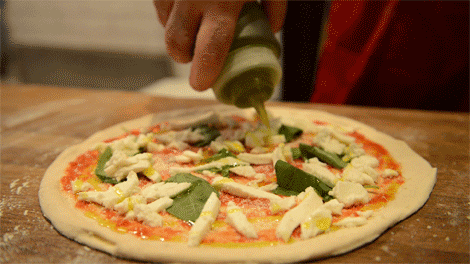

Toppings

Toppings
- Shredded mozzerella cheeze
- Tomato sauce
- Vegetables(optional)
Steps for the toppings
- Use homemade or store bought tomato sauce and spread it all over the pizza dough circle, except for the edges.
- Put your toppings on the sauce and dough. First, spread the cheese. Then, add the toppings.
- Look at the cooking the pizza tab for the next steps.